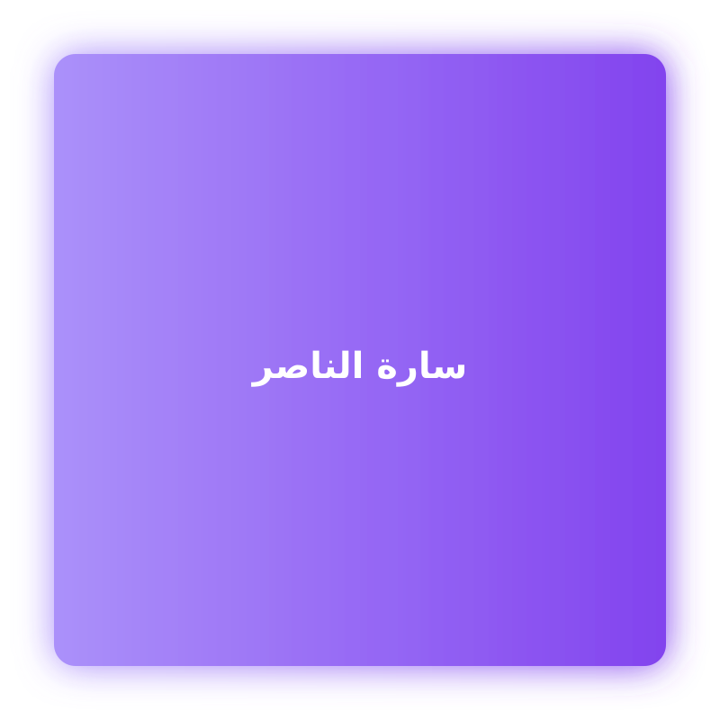

رحلة تحول عميق نحو الشفاء والتوازن والوعي
أساعدك على التحرر من الأنماط القديمة، فهم رسائل الجسد والعقل، وإعادة بناء حياة أكثر توازناً ووضوحاً وسلاماً.
من أنا
سارة الناصر مدربة معتمدة متخصصة في الكوتشنج، السايكوسوماتيك، والتنويم الإيحائي. أعمل مع العملاء لتحرير العوائق الداخلية وإعادة بناء حياة متوازنة.
الخدمات
الكوتشنج
جلسات فردية لاكتشاف الذات وتحقيق الأهداف.
جلسة 60 دقيقة
السايكوسوماتيك
فهم العلاقة بين العقل والجسد وتحرير المشاعر.
جلسة 90 دقيقة
التنويم الإيحائي
الوصول إلى العقل الباطن وإعادة برمجة المعتقدات.
جلسة 90 دقيقة
الاستشارات الأسرية والزوجية
تحسين التواصل ودعم العلاقات الأسرية.
استشارة
آراء العملاء
"تجربة تحولت حياتي" — ع.م
"مهنية وفعالة جدًا" — س.أ
الأسئلة الشائعة
ما الفرق بين الكوتشنج والعلاج؟
الكوتشنج يركز على الأهداف والحاضر والمستقبل، بينما العلاج يعالج الصدمات والاضطرابات النفسية.
هل التنويم الإيحائي آمن؟
نعم عند ممارسته من قبل مختص معتمد، ويستخدم لأهداف علاجية محددة.